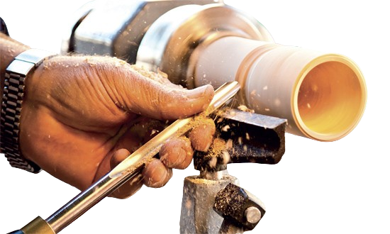
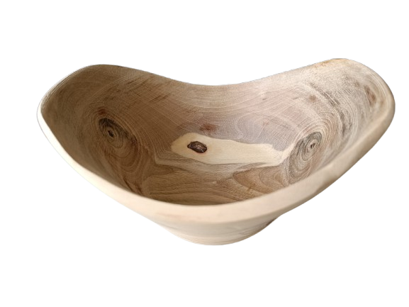
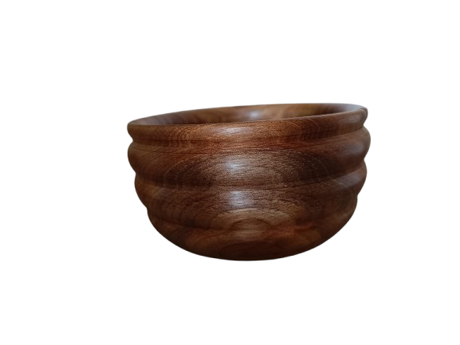
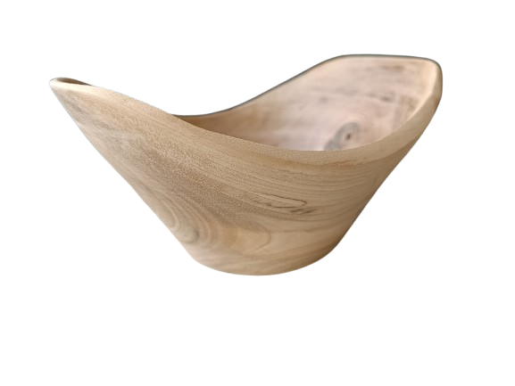
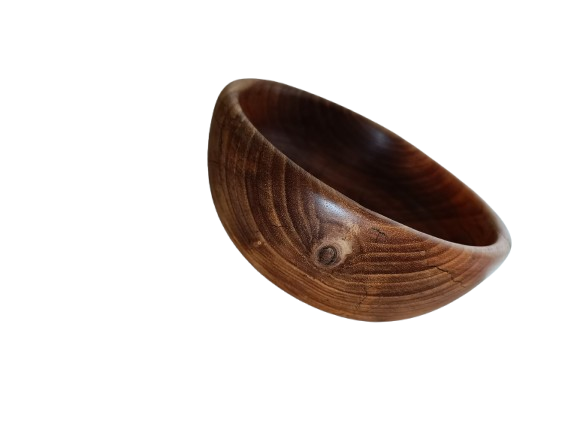
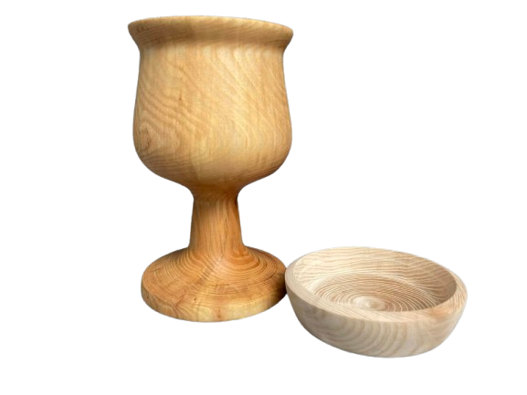
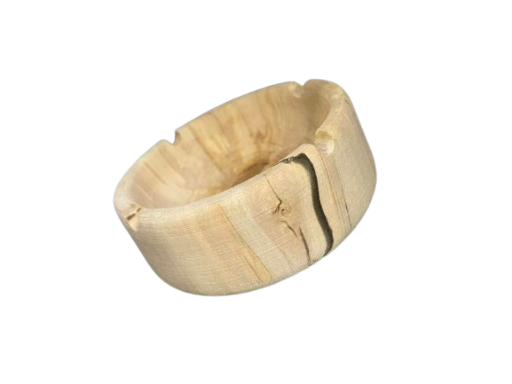

Práce se dřevem, srdcem i duší

* Tvarování dřeva do kruhu
ručně bys kulatý tvar (např. noha od stolu nebo miska) jen těžko udělal. Soustruh ti to umožní rychle a přesně.
* Kreativita a radost z tvorby
soustružení je hodně o fantazii. Každý kus dřeva je jiný a ty z něj můžeš udělat originální výrobek.
* Spojení řemesla a relaxu
soustružení uklidňuje, protože sleduješ, jak se surový kus dřeva mění pod rukama.
* Využití zbytků
často stačí i menší odřezky nebo suky a dá se z nich vyrobit něco hezkého a praktického.
* Tradiční řemeslo
soustružení patří k nejstarším technikám opracování dřeva a dodnes má svoje kouzlo.




Zde můžete poslat poptávku Vašeho přání:

Malá misečka na oříšky
z Jasanového dřeva

Větší pohár z Buku
+
menší podtácek z Javoru

Zahradní popelník z břízy